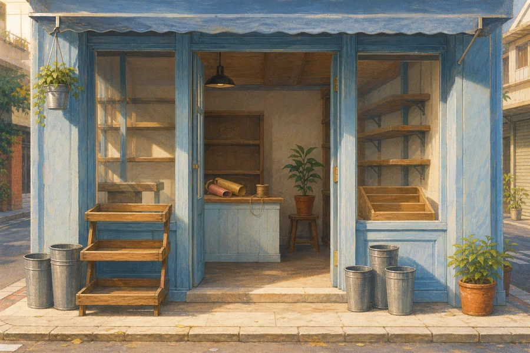

一直沒開門的花店

原創故事
小禾把鑰匙握在手裡。準備了好久的小店，今天終於要開門。 這一天，你想陪她帶著什麼心願開始？
選一張心願牌，陪小禾開始這一天。
故事先留在這裡。想回來時，再翻開就好。
選牌，再翻開後續。隨時可以離開，進度留在這台裝置。
放到主畫面，下次繼續這一頁。
連線時自動檢查新版
開始所選章節，會取代目前這一段的遊玩進度。
人物與情節全部自創，不是萊斯特的生平，也不是自傳或課程的原文。設計靈感來自向內看見、鬆開對結果的緊抓，以及做好眼前能做的事。
卡牌不判定你是否平靜。把心聲放在旁邊，或仍留在手邊，都不會改變事件的機率。它也不代表忽略責任、保證願望成真，或代替專業協助。
三段花店故事，沒有配樂、水聲、倒數或分數。進度只存這台裝置，不上傳，也不讀寫先前版本的遊戲紀錄。
請開啟 JavaScript，才能選牌與翻開故事。